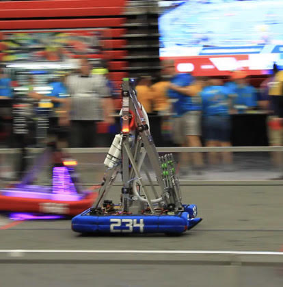
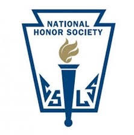
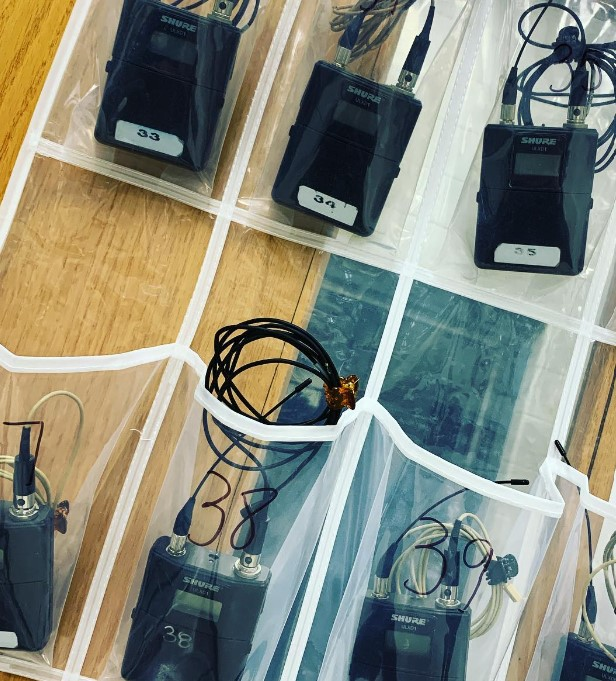
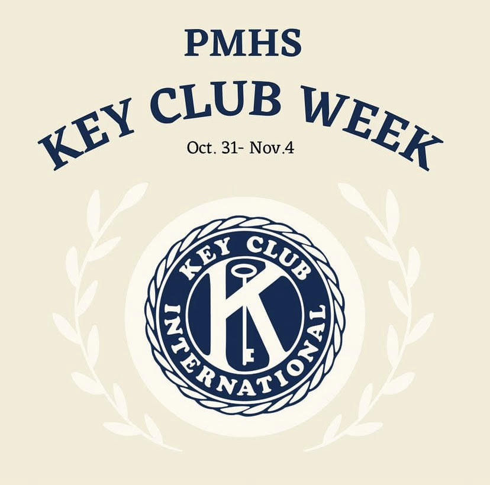
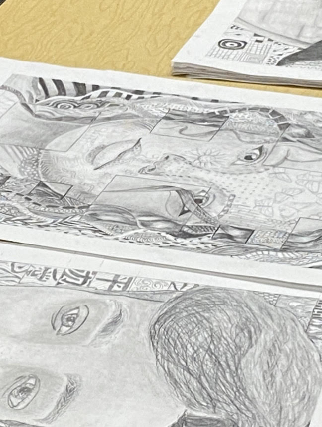

Extracurriculars:
PMHS’s robotics team, Cyber Blue, is a FIRST Robotics Competition based team. Each year each member must submit a resume and interview to get a position on the team. Each year FIRST releases a game each team must design and build a 125 lb robot to compete against other schools with, as well as report on the outreach and volunteering the team has done through the year. This club is an incredible opportunity to meet other people interested in STEM, and network with many other people in the community. This opens up many volunteering opportunities. This past year I was a FIRST dean’s list semi-finalist, meaning I was nominated by my team to interview at a district competition. This team has been an amazing opportunity for me, it has helped me build skills I will use in future careers, and meet people I will be able to reach out to in the future as well.
Math League is a club at my school that allows students to meet together and take a short math related quiz each month. Each month you take this quiz, and statistics are provided to you about your results compared to others in the club. This past year I finished top five in my school in comparison to others in the club. This allows for playful competition between people with similar interests as me. Also, as the quizzes are difficult, it gives a safe space to fail, and a good environment to teach me to pick myself up and try again.
NHS is a club that is only available to students of high achievement who are able to apply to. This club is based around the community and encourages members to complete service hours and practice leadership in the community. I have been elected as President for NHS, I am in charge of organizing and communicating with not only the club members, but the teacher sponsor as well. This gives me the leadership experience needed to be able to guide others and organize events in the future, as well as gives me practice with public speaking.
Environmental Club is a club that encourages students in the student body to be mindful of their choices when involving the environment. It hosts several events a year, such as Rock For The Earth. This event in particular is the event with the most need for member son the club, as it is a concert with student bands with the entrance fee going to a charity that benefits the environment. For R4TE I was the light coordinator. This, as well as cleaning up after sports games make this club good for people who love to volunteer for something greater than themselves.
Through my years of high school, I have been involved in many shows. I have been the Stage Manager for over four shows in my high school. The responsibilities included in the role are high. As a Stage Manager I must attend all rehearsals as well as stay after some days to ensure the smooth sailing of the show. I must communicate with cast members and tech crew to ensure that the running of the show is organized and everyone feels ready for show night. As stage manager, it is my responsibility to ensure everyone is on track, while also completing my work, such as completing cue sheets, and overseeing set design. This is the highest role someone can be when it comes to tech crew, and while the responsibilities are high, so is the enjoyment.
EWC is a club that is entirely focused on supporting and empowering women. Being part of this club gives you a wonderful community of women that share feministic views. Not only does this club encourage the socializing of its members, but it provides various activities to get the members in the club to bond. During Women’s Day, 2023, women in the club passed out flowers to our favorite female teachers to show we appreciate their impact on our lives. During Women’s History Month, we created several encouraging posters and notes and hung them up in all of our school’s women’s bathrooms. I enjoy being in this club for the community and assurance it provided me.
Key Club is a service based club that encourages service to the community. This club connects you to ways to help the school, as well as opportunities to volunteer in the community. This club allowed me to get service hours, as well as helped me socialize with new people I had not had the chance to interact with before. My favorite activity I have done for Key Club was to volunteer to watch children at a local church to allow local parents to have a break. There were several activities and knowing I made people’s day better while also getting to enjoy watching kids was an amazing activity.
Book club is a club at PMHS that meets once a week and discusses the current book that the whole club has been reading. Each week there are thoughtful questions about the current book, as well as an opportunity to suggest the next book. Not only did this give me access to interesting books, but it gave me an outlet to talk about them out loud, making them much more enjoyable. Being able to socialize with people with similar interests is great, and I greatly enjoy reading new books frequently aswell.
Art Club is a club that meets once a week and allows its members to get creative with any mediums they please. Last year I often spent my time designing and painting a chair to put in my school’s art show’s auction. Having a designated place to be able to channel your creativity is amazing, and being able to bond with people and have people there to give live advice and critique really allows your art style to expand. I feel like my artistic abilities are incredibly impacted in this club and I am grateful for the place to express myself.
